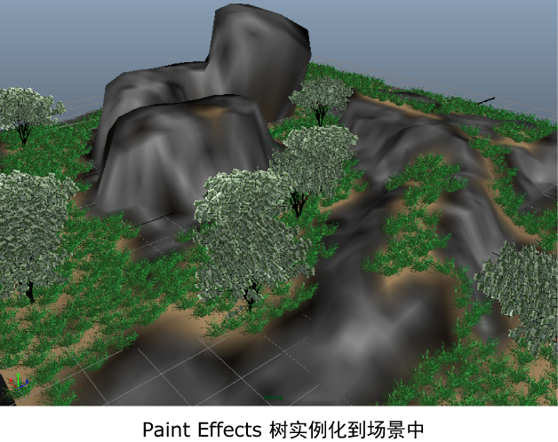

您可以使用“指定点”(Specify Points)工具将几何体添加到网格上的指定位置。此工具可以精确地将几何体放置到相应的位置，而不是依靠导向插值来定位归档基本体。
- 使用以下设置创建新的描述：
- “此描述将生成什么类型的基本体？”(What kind of Primitives are made by this Description?)，设置为“自定义几何体/归档文件”(Custom Geometry/Archives)。
- “生成基本体”(Generate the Primitives)，设置为“在指定的点”(At points you specify)。
- 单击“创建”(Create)。
- 单击“基本体”(Primitives)选项卡。
- 在“生成器属性”(Generator Attributes)部分中，单击“指定点”(Specify Points)。
然后将显示“指定点工具”(Specify Points Tool)窗口，且光标会变为点工具。
- 单击网格上要在其中生成树的区域。
黄色指示器标记了这些位置。
注： 若要删除点，请按住 键并单击该点。
键并单击该点。 - 在“指定点工具”(Specify Points Tool)窗口中，单击“保存并关闭”(Save & Close)。
将为指定的位置保存点贴图。
然后选择归档的 Paint Effects 树。
- 滚动到“归档文件”(Archive Files)部分，然后单击“添加”(Add)。
- 浏览到存储 Paint Effects 树归档文件的归档位置。
- “XGen 导入材质”(XGen Import Material)窗口出现后，单击“是”(Yes)以导入与树几何体关联的材质文件。 树几何体将会显示在点位置。根据场景的缩放比例，可能需要调整归档几何体的大小。
- 在“归档文件”(Archive Files)部分，调整“大小”(Size)来缩放树。 
请注意，所有树都有相同的大小和形状。在下一部分中，将创建表达式为树的大小和方向随机生成值。